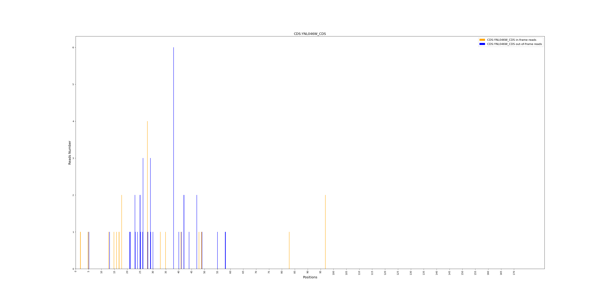
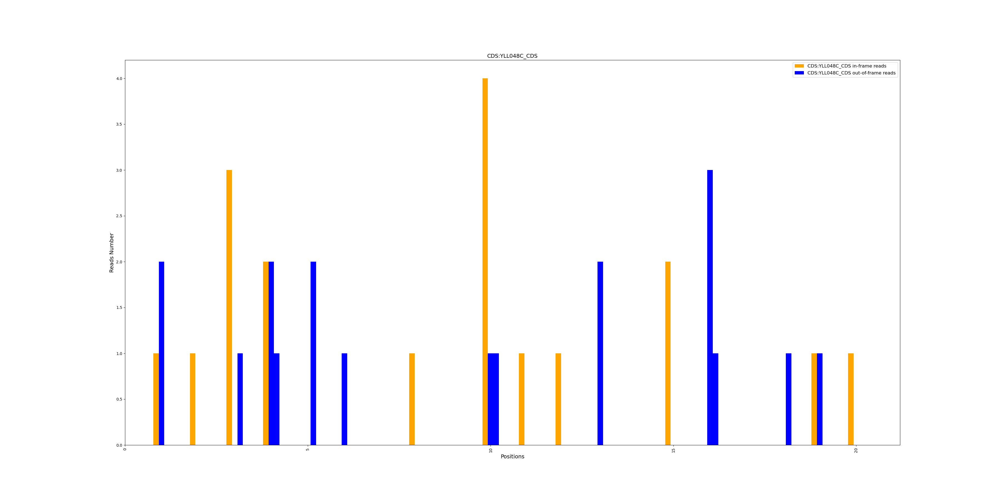
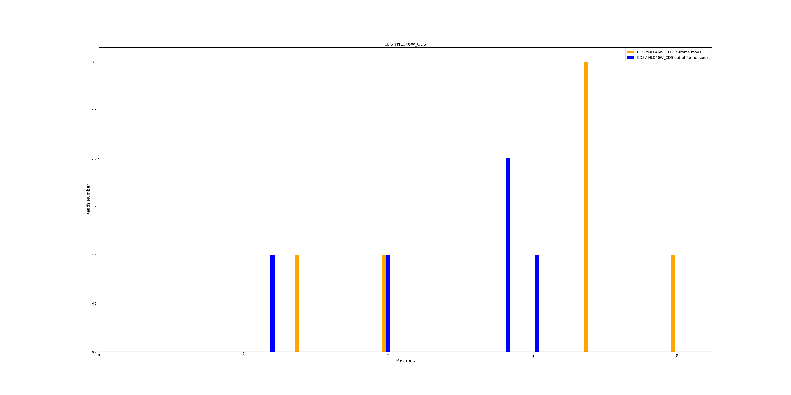

CDS Periodicity Plot Utility#
Overview#
This script is an additional tool for ORFribo, located in the Extra_Scripts directory on Github. It visualizes peridicity in ribosome profiling data. It generates bar plots showing in-frame and out-of-frame ribosome occupancy across coding sequences (CDS).
Installation Requirements#
Before running the script, ensure that the following Python packages are installed.
Note: This script cannot be executed inside a container because the package versions are not compatible with the script.
pip install matplotlib pandas numpy
Usage#
1. Individual Mode (Single File)#
To generate a periodicity plot from a single .tab file:
python metagenome_plotting.py --individual --tab path/to/file.tab --cds_name CDS001
Parameters:
--individual : Enables individual mode.
--tab : Path to the Exome_XX_periodicity_all.tab .tab file.
--cds_name : Name of the CDS to analyze.
2. Processing multiple CDS from a File#
If you have multiple .tab and multiple CDS names in a text file, use:
python metagenome_plotting.py --pooled --directory path/to/directory --cds_file cds_list.txt
Parameters:
--cds_file : Path to a text file containaing one CDS name per line.
--pooled : Enables pooled mode to process multiple files.
--directory: Path to the directory containing multiple Exome_XX_periodicity_all.tab .tab files.
Output#
The script generates bar plots where:
- Orange bars: In-frame reads (P0).
- Blue bars: Out-of-frame reads (P1 & P2).
The plot is saved as a .png file with the CDS name.
Example :#
1. Individual Mode (Single File):#
python3 metagenome_plotting.py --individual --tab Exome_28_periodicity_all.tab --cds_name YNL046W
-------
Individual mode selected...
Looking for: CDS:YNL046W_CDS
Processing file: Exome_28_periodicity_all.tab
Plot saved to YNL046W.png

2. Multiple files :#
python3 metagenome_plotting.py --pooled --directory Tabs/ --cds_file cds.txt --nb_cds 20
-------
Pooled mode selected...
Looking for: CDS:YLL048C_CDS
Processing file: Tabs/Exome_30_periodicity_all.tab
Processing file: Tabs/Exome_29_periodicity_all.tab
Processing file: Tabs/Exome_28_periodicity_all.tab
Plot saved to YLL048C_pooled.png
Looking for: CDS:YNL046W_CDS
Processing file: Tabs/Exome_30_periodicity_all.tab
Processing file: Tabs/Exome_29_periodicity_all.tab
Processing file: Tabs/Exome_28_periodicity_all.tab
Plot saved to YNL046W_pooled.png
--nb_cds 20: argument limits the number of CDS processed by the script.
cds.txt: file containaing one CDS name per line:
YLL048C
YNL046W
YLL048C_pooled.png

YNL046W_pooled.png
